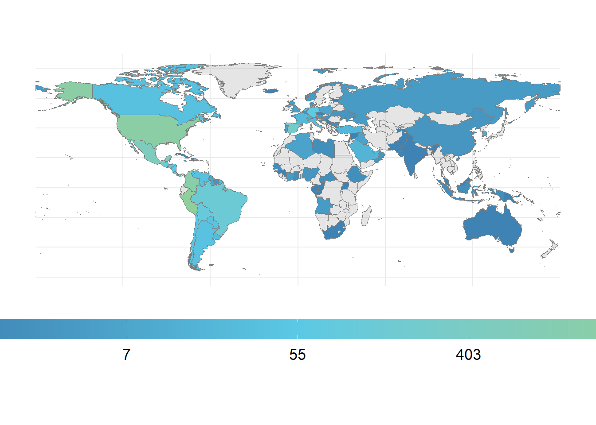

library(tidyverse)
library(haven)
library(sf)
library(rnaturalearth)
library(rnaturalearthdata)
library(gt)
library(cowplot)
library(gtExtras)
library(countrycode)Migración y motivos
Objetivo
Queremos construir un mapa temático o coroplético del mundo, que indique el número salidas de ecuatorianos mayores de 18 años por motivos de negocios.
Cargamos librerias:
Con que versión de R trabajamos
R.version _
platform x86_64-w64-mingw32
arch x86_64
os mingw32
crt ucrt
system x86_64, mingw32
status
major 4
minor 2.3
year 2023
month 03
day 15
svn rev 83980
language R
version.string R version 4.2.3 (2023-03-15 ucrt)
nickname Shortstop Beagle Metadato (bases crudas)
En la carpeta:
ruta_local <- "../migracion/data/"Descarga y lectura de las bases de datos:
Descarga
Se descarga la base de datos del Registro de Entradas y Salidas Internacionales (ESI) del enlace:
https://www.ecuadorencifras.gob.ec/entradas-y-salidas-internacionales/
Y se realizaron las siguientes acciones:
Descarga en formato
.dtaDescompresión en un proyecto local de R
Re ubicación del archivo con la base de datos dentro del directorio
data/en un proyecto local de R
Lectura
Empleamos la librería {haven} para traer las etiquetas de las variables y de las categorías.
base_datos <- read_dta("data/esi_2021.dta")
diccionario <- base_datos %>%
map(attributes) %>%
map_chr("label") %>%
enframe(name = "variable",value = "etiqueta") %>%
mutate(etiqueta = str_to_sentence(etiqueta))Variables que vamos a utilizar:
| variable | etiqueta |
|---|---|
| tip_movi | Tipo de movimiento |
| tip_naci | Tipo de nacionalidad |
| mot_viam | Motivo de viaje |
| pais_prod | País de procedencia destino |
| edad | Edad |
Adicional a la ESI debemos cargar el mapa del mundo:
world <- ne_countries(scale = "medium",
returnclass = "sf")Modificamos las bases de datos:
Primero filtramos y contamos las salidas de ecuatorianos mayores a 18 años, por motivo de negocios:
conteo_pais <- base_datos %>%
filter(tip_movi == 2, # Salidas
tip_naci == 1, # De ecuatorianos
mot_viam == 2, # Por negocios
edad > 18) %>% # Mayores de 18 años
count(pais_prod) %>%
mutate(iso_n3 = str_pad(pais_prod,3,pad = "0"))Unimos los datos al mapa del mundo y transformamos el conteo con el logaritmo, una transformación que facilita la lectura de mapas, adicional a ello quitamos del gráfico a la Antártica:
tabla_grafico <- left_join(x = world,
y = conteo_pais,
by = "iso_n3") %>%
filter(continent != "Antarctica") %>%
mutate(n = log(n))Vamos a definir una variable para hacer transparante los valores vacios o missing en la variable que vamos a gráficar en el mapa:
tabla_grafico <- tabla_grafico %>%
mutate(transparente = !is.na(n))Gráfico:
El gráfico del tema:
plot_resultado <- ggplot() +
geom_sf(data = tabla_grafico,
aes(fill = n,
alpha = transparente) ,
color = "#7D7D7C") +
scale_alpha_manual(values = c(0.2,1),
guide = 'none') +
scale_fill_gradient2(low = "#3c7fb1",
mid = "#5bc9e5",
high = "#8fcf9c",
midpoint = 4,
labels = ~scales::number(exp(.),
accuracy = 1))
plot_resultadoAñadimos el tema para que cuadre con la publicación
plot_resultado <- plot_resultado +
theme_minimal(base_size = 16) +
theme(axis.text = element_blank(),
legend.position = "bottom",
legend.key.width = unit(120,
units = 'points'),
plot.title = element_text(hjust = 0.5),
plot.subtitle = element_text(hjust = 0.5),
plot.caption = element_text(hjust = 0))
plot_resultado
Añadimos los títulos
plot_resultado <- plot_resultado +
labs(
title = "Salidas de ecuatorianos por motivos de negocios y destino",
fill = "Salidas de ecuatorianos",
subtitle = "Personas mayores de 18 años en el año 2021",
caption = "Fuente: Registro de Entradas y Salidas Internacionales (ESI, INEC)\nElaboración: Alex Bajaña, Brad Puglla")
plot_resultadoÚltimos detalles
plot_resultado <- plot_resultado +
guides(fill = guide_colorbar(title.position = "bottom",
label.position = "bottom",
title.hjust = 0.5,
barheight = unit(10,"points")))
plot_resultadoTabla
Extraemos los códigos de color del mapa:
data_mapa <- layer_data(plot = plot_resultado,i = 1)
data_mapa <- tabla_grafico %>%
inner_join(data_mapa %>%
select(geometry,fill))Joining with `by = join_by(geometry)`colores <- data_mapa %>%
as_tibble() %>%
select(fill,iso_n3)Preparo el resumen para generar la tabla del top 10 de países a los que migran los ecuatorianos:
resumen_tabla <- conteo_pais %>%
arrange(desc(n)) %>%
inner_join(unique(colores)) %>%
slice(1:10) %>%
dplyr::mutate(
porcent = n/sum(n),
nombre = as_factor(pais_prod),
iso_numerico = as.numeric(iso_n3),
pais = countrycode(sourcevar = iso_numerico,
origin = "iso3n",
destination = "country.name"),
iso_pais = tolower(countrycode(sourcevar =iso_numerico,
origin = "iso3n",
destination = "iso2c")),
imagen =
sprintf(
"https://flagcdn.com/w320/%s.png",
iso_pais
)
)Joining with `by = join_by(iso_n3)`colores_vector <- resumen_tabla %>% pull(fill)Generamos la tabla con {gt}:
tabla_gt <- resumen_tabla %>%
select(imagen,nombre,n,porcent) %>%
gt() %>%
text_transform(
locations = cells_body(columns = imagen),
fn = function(x) {
web_image(
url = x,
height = 20
)
}
) %>%
gt::fmt_percent(columns = porcent) %>%
gt::fmt_number(columns = n,decimals = 0) %>%
gtExtras::gt_theme_538() %>%
cols_align(
align ="center",
columns = everything()
) %>%
cols_label(
imagen = "",
nombre = "País destino",
n = "Salidas",
porcent = "Porcentaje"
) %>%
data_color(
columns = n,
colors = colores_vector
) %>%
opt_table_font(font = "Helvetica")
tabla_gt| País destino | Salidas | Porcentaje | |
|---|---|---|---|
 |
Perú | 3,770 | 38.94% |
 |
Estados Unidos de América | 2,244 | 23.18% |
 |
Colombia | 1,714 | 17.70% |
 |
Panamá | 665 | 6.87% |
 |
México | 519 | 5.36% |
 |
España | 261 | 2.70% |
 |
República Dominicana | 140 | 1.45% |
 |
Costa Rica | 137 | 1.42% |
 |
Brasil | 135 | 1.39% |
 |
Guatemala | 96 | 0.99% |
Guardando la imagen y la tabla:
Las dimensiones son para nuestra publicación, cambiar si es necesario.
gt::gtsave(data = tabla_gt,
filename = "tabla_10_negocios.png")
ggsave(plot = plot_resultado,
filename = "mapa_migracion_negocios.png",
width = 8*4496/2400,height = 4*4496/2400) # Dimensiones fijasUnión
plot_final <- ggdraw() +
draw_plot(plot_resultado ) +
draw_image("tabla_10_negocios.png",
scale = 0.3,
x = -0.27,
y = -0.13) +
draw_text("")
plot_finalpng( "post_completo_negocios.png",res = 250,
width = 8*4496/2400,
height = 4*4496/2400,units = "in")
plot_final
dev.off()png
2 Ultima cifra
conteo_pais_2 <- base_datos %>%
filter(tip_movi == 2, # Salidas
tip_naci == 1, # De ecuatorianos
edad > 18) %>% # Mayores de 18 años
count(pais_prod,name = "total_salidas") %>%
mutate(iso_n3 = str_pad(pais_prod,3,pad = "0"))
n1 <- conteo_pais_2 %>% pull(total_salidas) %>% sum()
n2 <- conteo_pais %>% pull(n) %>% sum()Guión
Conceptos
Salidas de ecuatorianos por motivos de negocios: Consideramos las salidas de ecuatorianos mayores de 18 años. La estancia máxima, generalmente, es de 90 días por año, sin embargo existen excepciones como el convenio Schengen o el convenio de países de la UNASUR.
Negocios: El visado por motivos de negocios depende de cada país. Algunos requisitos suelen ser: pasaporte válido, carta de invitación de la empresa u organización, antecedentes de la actividad laboral que se realiza, entre otros. Se recomienda visitar la página del consulado del país al que desear ir para conocer los requisitos específicos.
Estadísticas claves
Más del 50% de las salidas por motivos de negocio tienen como destino a países sudamericanos como Perú y Colombia, a los cuales se puede ingresar solamente con la cédula de identidad. En América del Norte, Estados Unidos y México concentran alrededor del 28% de salidas.
España es el país europeo con mayor tránsito por motivos de negocio, sin embargo el resto de este continente no es muy visitado por este motivo.
Las salidas por negocios (10 662) representan el 1% del total de las salidas de ecuatorianos mayores a 18 años (749 424)
Citas
https://gt.rstudio.com/reference/ggplot_image.html
https://github.com/ropensci/rnaturalearth
https://tidyverse.org